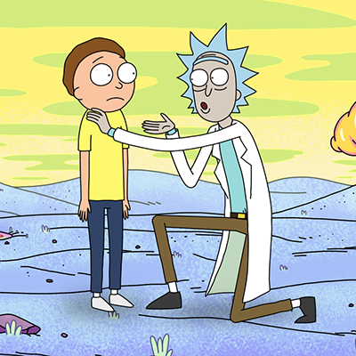
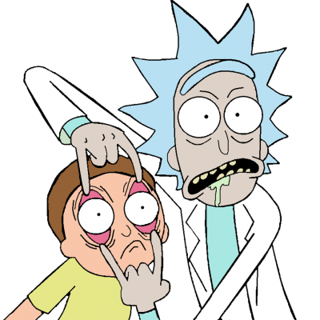

Rick And Morty - Info
Wikipedia
Rick and Morty is een Amerikaanse komische sciencefiction animatieserie uit 2013, gecreëerd door Dan Harmon en Justin Roiland voor Adult Swim. Roiland verzorgt de stemmen van beide titelpersonages.
De serie volgt de bizarre avonturen van de wetenschapper Rick en zijn kleinzoon Morty. De serie werd een kijkcijfersucces en een tweede seizoen ging in 2015 van start.[1] Op 2 april 2016 verscheen de reeks op Netflix in Nederland en België.
Op 10 mei 2018 heeft mede-bedenker, Justin Roiland op Twitter en Instagram aangekondigd dat er nog 70 nieuwe afleveringen komen van de populaire serie Rick and Morty. Op 27 oktober 2018 ging de serie in première bij Comedy Central Vlaanderen.


HomePage
Externe Links
Wikipedia
Adult Swim